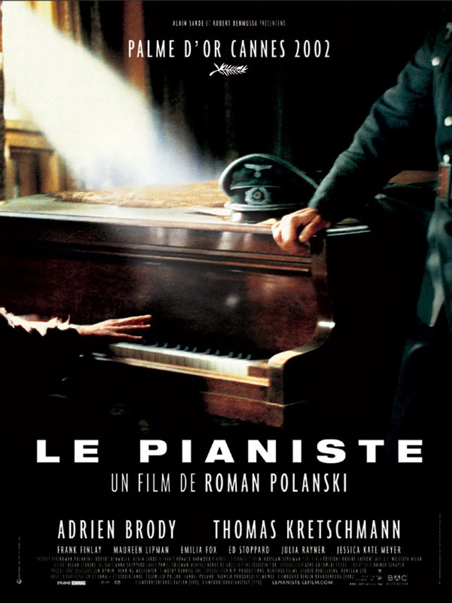

The Pianist

SINOPSIS
"The Pianist" es una película dirigida por Roman Polanski, basada en las memorias del pianista
polaco-judío Władysław Szpilman. La película se desarrolla durante la Segunda Guerra Mundial
y muestra la lucha de Szpilman por sobrevivir mientras está escondido en Varsovia ocupada por
los nazis. A medida que la guerra avanza y su vida se vuelve cada vez más peligrosa, Szpilman
se aferra a la música como una forma de resistencia y esperanza. "The Pianist" es una poderosa
historia sobre la supervivencia, la resiliencia y la importancia del arte en tiempos difíciles.